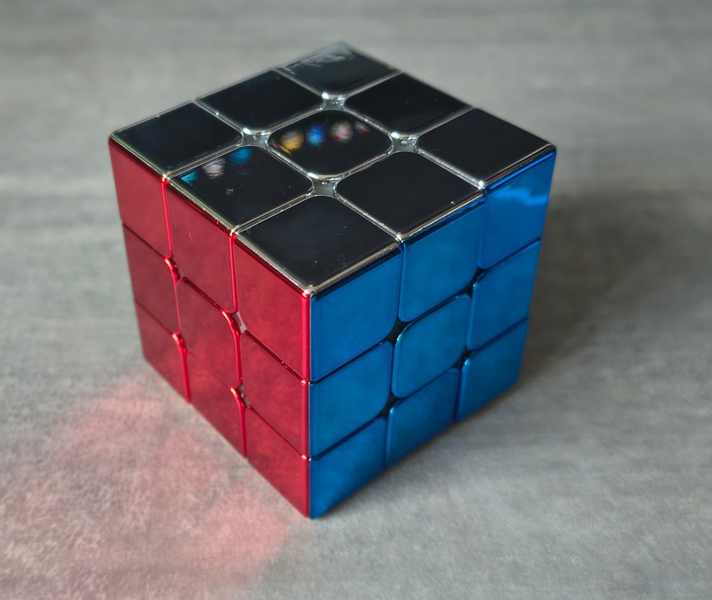

El cubo de Rubik es un rompecabezas tridimensional formado por pequeños cubos de colores que pueden girar en diferentes direcciones.
Fue inventado en 1974 por el arquitecto y profesor húngaro Ernő Rubik como una herramienta para enseñar conceptos espaciales.
Con el tiempo, se convirtió en uno de los juguetes más populares del mundo, desafiando la lógica y la paciencia de millones de personas.
este trabajo se explicará su funcionamiento, sus características principales y algunas formas de resolverlo.